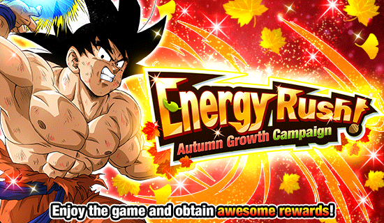
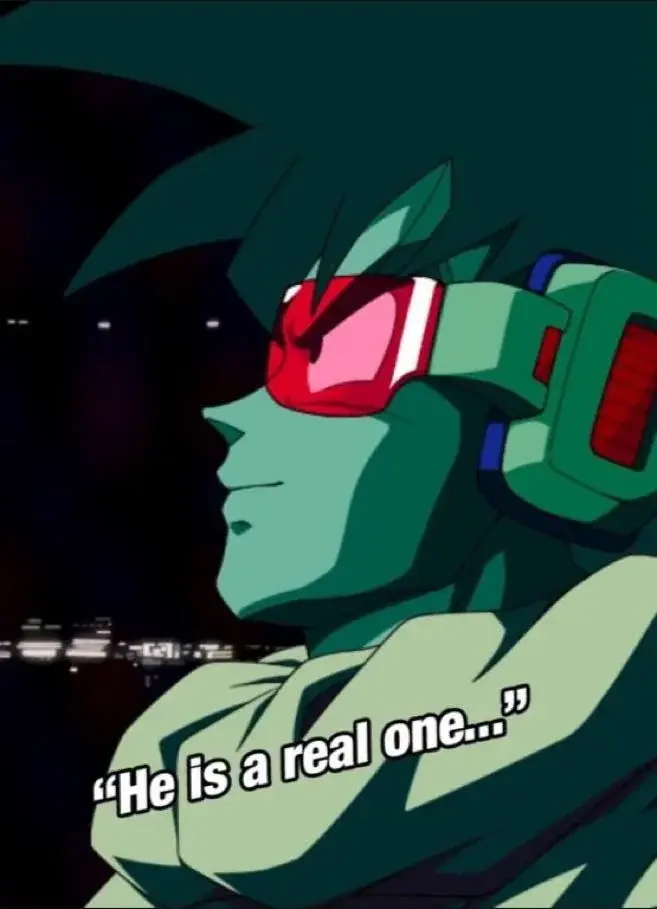
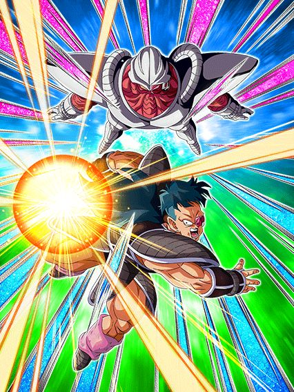
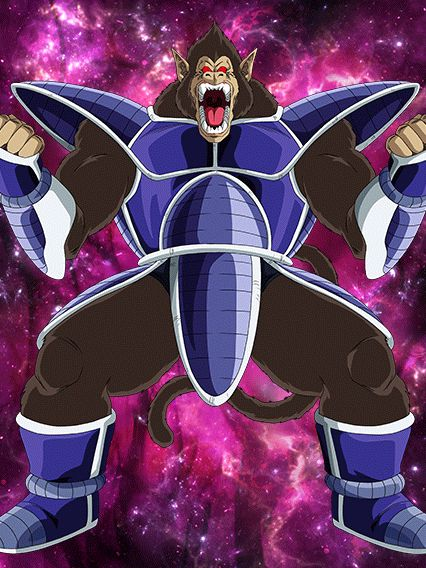
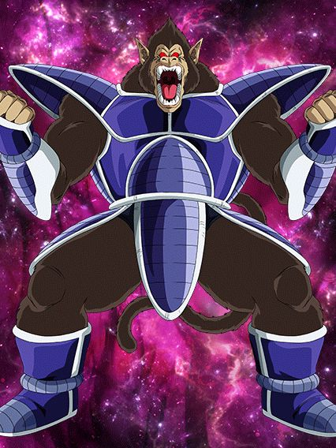
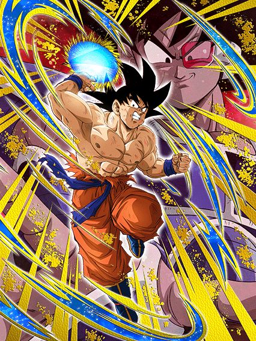
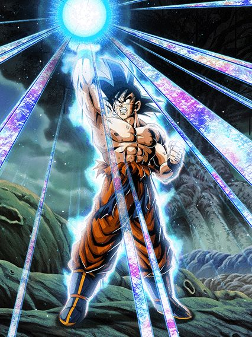

Simulador de skip.
A celebração depois de uma das mais importantes do ano… é, não dá pra esperar muito
Mas hey, quantidade decente de ds e conteúdo pra fazer

Procurando o inimigo goku's family desde 1990.
O turles é um card legal, só que ele foi bem injustiçado pelos devs
Ele stacka ATK e recupera HP em todo super, além de ter alguns buffs multiplicativos e builda 160% de DEF a mais com só 4 supers, fazendo dele um personagem stacker muito decente
Pra começar, ele tem uma intro com os visuais lindos maravilhosos, uma OST incrivel, e é claro,
He is a real one.

Mas infelizmente a intro só ativa contra um inimigo gohan kid ou goku's family (isso pode ter soado confuso mas na vdd existem cards que incluem o gohan sem necessariamente ser um card goku's family)
E a intro não ativar já é um problema, já q ele daria um suporte de 3 de Ki e 18% de ATK pra todos aliados extreme pra sempre, então o problema já tá aí, mas piora
Lembra da defesa q builda com supers? (isso em si já é um problema) Bom, junto com essa defesa ele builda incríveis 20% de redução de dano, isso honestamente é ridículo, tá no nível de acharem que crítico e redução de dano são equivalentes.
E ele ainda fica efetivo contra tudo depois de dar 6 supers, oq é muito se for ver o quão rápidas as batalhas tem sido ultimamente, mas enfim, pelo menos isso n é restrito tmb
Ele tem uma active boa com a condição horrível de goku's family mas caso não tenha cê pode usar a partir do turno 6 pelo menos
Agora, não tem como deixar passado q o turles é basicamente o ginyu desse ano e os dois nem se comparam, já que o turles simplesmente tem falhas bestas que batem uma tristeza na real
Exigir inimigos específicos pelo nome em um card de 2023 é muito idiota, triste oq fizeram com o rapaz, acham q os 20% de redução vão salvar ele do super do zamasu red zone..

Vegeta e Trunks versão extreme class.
Por que esse card é melhor que o Turles?
O card é literalmente um tank decente e suporte pq sim, não tem nem oq dizer, eles são melhores
Eles buildam tomando ataques e é só isso, eles não vão dar o maior dano do jogo mas só de terem 350% de DEF buildados, junto com defesa ativa e 20% de redução de dano no slot 1…

Fraudehan só que.. pior?
Personagem inútil que builda dando super attack, literalmente sem uso
Tipo, eles não dão nem suporte pro Turles, praq eles existem se o outro card é tank, é suporte e linka bem?
 

Ele é um eza.
É um card decente até, vai linkar com o dokkan fest por eles terem nomes diferentes, e no geral não tem defesa ativa ou algo assim mas pelo menos consegue ter 360% de DEF se estiver num time full space travelling warriors, oq não é difícil, é o time dele.
Ele tem uma transformação oozaru, que é legal eu acho, pelo menos considerando q o bug de anular os supers e AOEs exista no futuro.
Mas que tem uma passiva de 1 linha.
Nada a elaborar, é só isso.

Ele é um suporte pra power of wishes.. parabéns pra ele, eu acho.
Eu pessoalmente gosto da arte desse cara, mas ele é um nuker genérico, é só isso q ele faz
Ganha ATK, DEF e chance de critico por orb, e quando o HP tá abaixo de 59% ele dá mais dano, é só isso mesmo.
 & Super Saiyan Goten (Kid)")
Cooler str versão super class.
Oq eu disse acima não é brincadeira, eles realmente tem um pedaço da passiva idêntico ao do cooler, mas enfim, é bem isso q eles fazem, tirando a parte de stackar ATK
Buildam com 10 ataques, ganham buff quando tem um Goku na rotação e ficam mais fortes quando ki tá em 24
Eles tem uma active nuke q dá um dano do caramba, e é isso
Em resumo, eles dão dano e é só isso, a defesa deles é decente mas é bem meh, a não ser q eles deem 4 supers, enfim, um eza decente. Mas OQ ISSO TÁ FAZENDO NUMA CELEBRAÇÃO DO TURLES?????

…pq?
Esse card não basta ser o terceiro goku base no ano, mas ele também é horrível.
Esse goku é um card AOE, feito pra 1 EVENTO, SÓ 1
Ele só tem passiva se vc estiver enfrentando MAIS DE 2 INIMIGOS, não pode nem ser 2 ou mais, é muito decepcionante, chega a ser ridículo
Esse card em 55% é muito horrível, n tem nem chance, ele tem uma defesa podre e nem o dano em área ajuda, é triste demais.
Pelo menos a active dele é bonita, mas é só isso, e apesar das muitas coisas boas esse ano, o acontecimento de terem 3 gokus base no ano é bem absurdo e gerou uma certa reclamação..
Pelo menos, no global, esse cara lançou com o incrível sistema de pity q é muito bom, então já é alguma coisa.

Por mais bizarro e estranho q isso pareça, ele não é ruim.
Ele tem números muito bons, 30% de chance de desvio oq é meh, mas ele é um nuker, e ainda tem um adicional de 50% de ser super q não tem nenhuma condição
A única parte triste é q esse vegeta tmb muda orbs mas só se tiver um inimigo goku, é a única parte ruim dele pq em geral ele é um card estranhamente forte.
Você chegou ao fim dessa página!
Obrigado por ler tudo, e fica a vontade pra ver outras